直近1週間の人気フィード
はてなブックマーク数を元に新着優先で並べ替え
Wiresharkで観察して理解するHTTPS（HTTP over TLS）の仕組み 308RAKUS Developers Blog | ラクス エンジニアブログ
308RAKUS Developers Blog | ラクス エンジニアブログ
はじめに HTTPS(HTTP Over TLS)とは SSL/TLS HTTPSの流れ 実際に通信を観察 自己署名証明書の用意 サーバーの作成 WireSharkの準備 リクエストを送信して観察 まとめ
21時間前
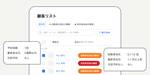
データベースの値をちょっとだけ書き換えたら検索に数十分かかる様になって障害になった裏話 128STORES Product Blog
はじめに 2024年1月にリテール(ネットショップ・レジ)部門からサービス(予約)部門に異動になった @ucks です。 異動してからはスマートリストという機能の開発を行っていて、5月6日に無事リリースできたのと、開発途中で障害に至ってしまった部分があるので、裏側を少し紹介しようかなと思います。 はじめに スマートリストとは スマートリストの設計 検索の仕様変更 高負荷時のハンドリング そして障害へ 見逃した点 DBの実行計画確認時の見逃し 動作確認時の漏れ 監視先の漏れ ログの損失 おわりに スマートリストとは スマートリストの開発についての話を行う前に、まずはスマートリストについて簡単に説…
1日前
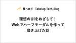
理想のUIをめざして！Webでハーフモーダルを作って磨き上げた話 46Tabelog Tech Blog
こんにちは！飲食店システム開発部オーダーチームの開発エンジニアを担当している堀口です。 食べログオーダーは、レストランでの飲食体験をより快適にするためのモバイルオーダーシステムです。飲食店に来店したお客様が自身のスマートフォンを使用してQRコードを読み取り、Web上でメニューをカートに追加し注文することができます。メニュー選択や注文操作はWebでありながら、ハーフモーダルを使用したネイティブアプリのような注文体験ができます。 この記事では、モバイルオーダーシステムのUI改善に焦点を当てます。ハーフモーダルの採用がどのようにして決定されたのか、その開発プロセス、そして実際に達成された改善点につい…
1日前
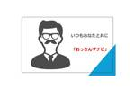
社内用AIアシスタント「おっさんずナビ」を作った話、そして人間らしく振る舞う重要性を認識した話 60Raccoon Tech Blog [株式会社ラクーンホールディングス 技術戦略部ブログ]
こんにちは、羽山です。 みなさんは業務に LLM（生成AI）を活用していますか？ラクーングループでは生成系AI LT大会を開催するなど、積極的な利用を推し進めています。 そこで今回は私がその生成系AI LT大会で発表し、 … "社内用AIアシスタント「おっさんずナビ」を作った話、そして人間らしく振る舞う重要性を認識した話" の続きを読む
1日前
ログ基盤のFluentdをFluent Bitに移行して監視ツールを実装した話 183Mirrativ Tech Blog
はじめまして、Azuma（@azuma_alvin）です。現在大学院の1年生で、2024年2月から4ヶ月間ミラティブのインフラチームにインターンとして参加しました。普段はインフラやMLOpsといった領域に興味があり、最近はVim環境の整備がマイブームです。 本記事では、ログ基盤をFluentdからFluent Bitへ部分移行した経緯とその2種類の監視ツールの実装についてお話しします。 記事の最後に、インターンから見たインフラチームの特徴と私が4ヶ月間で学んだことを紹介しています。興味がある方は末尾までスクロールしてぜひご覧ください。 1. 背景と目的 2. ミラティブのログ基盤について 3.…
4日前
何が事業貢献なのか分からなくなっていた伊藤直也さんが再認識したユーザーエクスペリエンスへのコミット 570Findy Engineer Lab
ソフトウェアエンジニアは、どのように事業に貢献すべきか？ 宿泊施設やレストランの予約サービスを提供する株式会社一休で執行役員CTOを務める伊藤直也さんは、2016年に入社しておよそ2年間、心の奥に抱えた悩みを解消できないまま仕事をしてきました。伊藤さんは、2000年代から複数のWeb系テックカンパニーで技術部門のリーダーとして活躍し、現在でも利用される個人向けWebサービスのローンチをいくつか手掛けています。一休には入社以前からフリーランスで技術顧問を務めており、会社がヤフーグループ（当時）に入って経営陣が一新されるタイミングで、代表取締役CEOとなった榊淳さんの要請を受けて入社しました。当時は全て.NETだったというサービス基盤の刷新や技術的負債の解消、開発組織の整備といったエンジニアリングにおいて重要な改善を進めてきましたが、あるとき自身が「事業に貢献していない」ことを明確に意識することがあったといいます。そこで気づいた仕事の仕方やビジネスに対する意識、そしてエンジニア個人が事業に貢献するとはどういうことかを伺いました。プリンターすら使えない中で技術的負債の解消に着手する自分は事業
6日前
Stailerがスクリーンリーダーに対応するまでの道のり~Flutterでのスクリーンリーダー対応について、あるいはユーザビリティやユーザー獲得の話~ 2710X Product Blog
こんにちは、ソフトウェアエンジニアの@futaboooです。 先日スクリーンリーダーへ対応したプレスリリースを配信しました。今日はその裏側について紹介です。 10x.co.jp はじめに とあるパートナーのネットスーパーシステムをStailerへリプレイスして少しすると、お客様から「今まで使えていたのに使えなくなった！」という切実な声が届きました。この問い合わせを通じて、視覚障害者のお客様がスクリーンリーダーを使って買い物をしていたこと、そしてStailerがそのニーズに応えていないことに気づきました。 そこで、我々は視覚障害者のお客様へのヒアリングを開始し、どのような環境でアプリを使っている…
1日前
AWSリソースの差分比較ツールを自作したのでご覧あれ 35Technology - NRIネットコムBlog
本記事は マイグレーションウィーク 6日目の記事です。💻🖥 5日目 ▶▶ 本記事 ▶▶ 🖥💻 初めに ITの変遷と思想の変遷 新たな問題 作ってみた DARS 何と呼ぶ？？？ コードはこちら 機能紹介の前に 3つの機能 diff conf html バッチ編 課題 ユースケース 最後に 得られた副産物 人間は間違える 初めに こんにちは、上田です。 2024年5月にネットコムに入社したばかりで社内ネタを持ち合わせていないので、作ってみたシリーズに乗っかってみました。 また、今回のテーマはクラウドマイグレーションということなので、オンプレミスからクラウドへITリソースを移行するに伴って人間の考え…
1日前
Googleフォームの設定ミスによる情報漏えいが多発～あなたのフォームは大丈夫？ 原因となる設定について解説～ 215ラック・セキュリティごった煮ブログ
デジタルペンテスト部の山崎です。4月から「セキュリティ診断」の部署が「ペネトレーションテスト（ペンテスト）」の部署に吸収合併されまして、ペンテストのペの字も知らない私も晴れてペンテスターと名乗れる日がやってまいりました！（そんな日は来ていない😇） そんなわけで、新しい部署が開設しているブログのネタを探す日々を送っていたのですが、最近、Googleフォームの設定ミスによる情報漏えい事故が増えてきているようです。どのような設定が問題となっているのでしょうか？ 同じような事故を起こさないよう、設定項目について見ていきたいと思います。 情報漏えいの原因となりうるGoogleフォームの設定について Go…
5日前
バクラクのAI-OCRが扱う問題の複雑さ 25LayerX エンジニアブログ
こんにちは。 LayerXのバクラク事業部 機械学習チームのテックリードを務めております機械学習エンジニアの島越（@nt_4o54）です。 最近、カジュアル面談や学会などで「AI-OCRってもうほぼ完成で、運用フェーズですよね」「やることあるんですか？」など頻繁に聞かれることがあります。 「いやいや課題が山のようにあるんです」という話をいつもしているので、今回は我々が作っているAI-OCRがどれだけ複雑で難しい問題を扱っているか、という部分についてお話しさせていただければなと思います。 少し、経理ドメインの話が多く恐縮ですが、お付き合いいただけると嬉しいです。 AI-OCRについて AI-OC…
2日前
大吉祥寺.pmに行ったら美味しいランチも楽しもう 22Retty Tech Blog
Retty VPoEの常松です。来たる2024年7月13日(土)に技術勉強会 吉祥寺.pmの10周年イベント 大吉祥寺.pm が開催されます。私も登壇者の一人として参加予定です。 そんな大吉祥寺.pmですが、運営の方が「せっかくだから吉祥寺の美味しいものを食べていって欲しい」という思いから、おすすめのお店をX(Twitter)で募っていました。 大吉祥寺.pmに向けて、吉祥寺駅周辺のランチ情報を収集していますこのハッシュタグをつけて、お店の名前と写真をポストするだけです！#吉祥寺の美味しいものぜひご協力をお願いします！ https://t.co/qnq50BNT3a— 吉祥寺.pm (@kic…
1日前
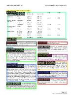
Document Layout Analysisに物体検出を利用したDocument Object Detectionのすゝめ 32LayerX エンジニアブログ
はじめに こんにちは。バクラク事業部 機械学習チームの機械学習エンジニアの上川(@kamikawa)です。 バクラクではAI-OCRという機能を用いて、請求書や領収書をはじめとする書類にOCRを実行し、書類日付や支払い金額などの項目内容をサジェストすることで、お客様が手入力する手間を省いています。 書類から特定の項目を抽出する方法は、自然言語処理や画像認識、近年はマルチモーダルな手法などたくさんあるのですが、今回は項目抽出のための物体検出モデルを構築するまでの手順について紹介します。 Document Layout Analysisとは Document Layout Analysisとは、文…
3日前
フルリモエンジニアのデスク環境!!劇的ビフォーアフター 60SmartHR Tech Blog
ネタバレ防止のため写真なしアイキャッチにしました こんにちは、SmartHRの@nansekiです。 意外と知られていないのですが、SmartHRのプロダクトサイドはフルリモートOKで、多くの社員が自宅で仕事をしています。フルリモート勤務を支える制度*1には以下のようなものがあります。 リモートワーク環境を整える手当 入社時に25,000円支給 リモートワーク手当 毎月5,000円支給 フルリモート通勤制度 遠方居住者が所属オフィスに出社する交通費は、月2回まで通勤手当ではなく経費精算OK（金額上限なし） 今回はそんなフルリモートで働くエンジニアのデスク環境に迫ります。 コロナ禍で強制的にリモ…
4日前
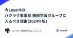
今LayerXのバクラク事業部 機械学習グループに入るべき理由(2024年版) 16LayerX エンジニアブログ
すべての経済活動を、デジタル化したい松村(@yu-ya4)です。LayerXのバクラク事業部機械学習グループにおいて機械学習エンジニア兼マネージャーを務めています。 先日、代表の福島(@fukkyy)が以下のnoteを公開しました。LayerXの発信を見てくださっている社外の方々から「もう入るには遅い会社だよね?」と言われることが最近増えたことに対して、LayerXがまだ全然完成されていない、成長機会だらけのこれからの会社であるということを綴った内容となります。 note.com 今回はこの内容を受け、LayerXのバクラク事業部においてAIや機械学習を活用した機能の開発・顧客価値の提供に責任…
2日前
PostgreSQLのPub/Sub機能とJavaのクライアント実装 126フューチャー技術ブログ
<p>本記事は<a href="/articles/20240617a/">「珠玉のアドベントカレンダー記事をリバイバル公開します」</a>企画のために、<a
5日前

freee PSIRTの風景：Dependabot alertの調査 21freee Developers Hub
こんにちは、PSIRTのWaTTsonです。 昨年の夏頃に、「Dependabot alertをSlackに通知して、トリアージ運用に役立てる仕組みを作ってみた」という記事を投稿しました： developers.freee.co.jp ここでは、新しく報告されたDependabot alertをSlackに通知し、Jiraチケットを作成してPSIRTメンバーをアサインし、トリアージを行って各開発チームのチャンネルにメッセージを送信する、という仕組みについて説明しました。 今回は、この中でPSIRTメンバーがトリアージをする時にどういう風なことをしているのかを書いてみたいと思います。 過去に私自…
3日前
機械学習とビジネスゴールのはざまで 12LayerX エンジニアブログ
機械学習をプロダクトに取り入れて磨き上げているいるみなさん。機械学習モデルのオフライン評価とビジネス上のKPIとを近づける難しさを感じてませんか？ はじめに 深澤 (@qluto) です。 LayerXという会社で、経理業務をはじめとした業務支援を行うバクラクシリーズの開発に携わっています。私はその中でも、非定型の書類から的確に情報を読み取るAI-OCR機能の開発を担当しています。 私は、機械学習を根幹に据えつつ、ビジネス上や直接的なユーザーの課題解決のために複合的な問題に対処してきたソフトウェアエンジニアです。 今回は、機械学習とビジネスゴールの狭間で生じがちな問題を俯瞰し、バクラクのAI-…
2日前
生成AI情報収集 プロ驚き屋に踊らされるな 39paiza times
普段から生成AIの情報を追い、自分でも使いながら情報発信をしているため、どのように情報収集をしているのかを聞かれることがあります。情報収集手段はおそらく皆さんとそれほど変わらず、SNS・ブログ・YouTubeなどが中心ですが、情報収集する上で意識しているポイントをまとめておきます。 ＜この記事の著者＞ 大谷大 - Tech Team Journal ウェブデザイナー/映像クリエイター/作曲家/ギタリスト/ブロガー/YouTuberBGMや効果音を無料でダウンロードできるサービス「タダオト」を運営し、自らが作曲した楽曲を掲載。2023年に生成AIにハマり、さまざまな仕事でフル活用しながらそのノウ…
4日前
クレジットカード決済システムの可用性向上とそれに伴うサービス共通利用規約の改定について 145
pixiv inside
こんにちは、CTOのharukasanです。私が担当しているファイナンシャルサービス本部ではピクシブが運営している各サービス(pixiv、BOOTH、pixivFACTORY、pixivFANBOX、pixivコミック、Pastelaなどなど)においてご利用頂く、決済・送金といったお金のやりとりに関するシステムの構築・運用を行っています。 ピクシブでは決済に関する手続きを変更することを目的に、2024年8月1日にサービス共通利用規約の改定をします。この記事では今回の規約改定を行う理由である、クレジットカード決済システムの可用性向上のために行うクレジットカード決済の転送サービス導入について、クレ…
6日前
AWSでElastic Cloudを利用する 2024年版（構築編） 33Taste of Tech Topics
こんにちは、Elastic認定資格３種(※)を保持しているノムラです。 ※Elastic社の公式認定資格（Elastic Certified Engineer / Elastic Certified Analyst / Elastic Certified Observability Engineer） 皆さんはElastic Cloudを利用されたことはあるでしょうか？ Elastic CloudはElastic社が提供しているSaaSサービスで、クラウドプロバイダはAWS、Azure、GCPをサポートしています。 最新バージョンのクラスタ構築や、既存クラスタのバージョンアップを数クリックで実…
4日前
［入門］Webフロントエンド E2E テスト を出版しました 9フューチャー技術ブログ
<img src="/images/20240701a/d0988e2d-efbc-e4c5-5c8a-1bf25d2db216.png" alt="" width="1187" height="1500"
2日前
モバイルエンジニアのためのGoogle I/O 2024とWWDC24を振り返る【モバイルTechCafe イベントレポート】 29RAKUS Developers Blog | ラクス エンジニアブログ
こんにちは、モバイル開発チームのhyoshです。 弊社では各分野の特定のテーマに沿ってエンジニアが議論する「TechCafe」というイベントを定期開催しています。 そして先日私を含めた弊社モバイル開発チームが2度目となる「モバイルTechCafe」を開催しました！ 今回のイベントでは「Google I/O 2024とWWDC24で気になったセッション」について語り合いました。 弊社のメンバーが事前にまとめてきた情報にしたがって、他の参加者に意見を頂いて語り合いながら学びました。 今回はその内容についてレポートします。
4日前
Difyの全社活用について、Dify Meetup Tokyo #1で発表しました 53Tabelog Tech Blog
はじめに こんにちは。テクノロジー本部 アドバンストテクノロジー部 部長の時田充です。私たちの部門は、生成AIをはじめとする先進技術を活用し、全社の業務生産性を向上することと、サービスの改善を支援することをミッションに活動しています。その一環として、Difyの全社活用をテーマに2024年6月23日に開催されたDify Meetup Tokyo #1で発表しました。 Dify Community(JP)の立ち上げとMeetupイベントの開催 カカクコムでは、全社的な生成AI活用プラットフォームとしてDifyを選定したことと並行して、弊社CTOの京和がDifyアンバサダーのサンミンさんと共にDif…
5日前
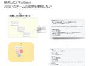
スクラムチームをLeSSっぽく2分割したらリリース頻度が2倍になった話 4NTT Communications Engineers' Blog
時系列データ分析ツール「Node-AI」を開発するスクラムチームは、LeSS（Large-Scale Scrum）を参考にした開発プロセスを採用しました。 本記事では、その背景や数か月試した結果について紹介します！ 目次 目次 はじめに Node-AIについて フロントエンドのリプレイスを終えて チーム分割に対する勘所 コンポーネントチームとフィーチャーチーム 実際の運用 チームへの愛着 2チーム体制を続けてきて おわりに はじめに はじめまして、イノベーションセンター Node-AIチームの中野、半澤です。 （中野）Node-AIチームでは2024年4月からスクラムマスターとして活動しており…
2時間前
N予備校の規約類を microCMS で管理して、運用を改善した取り組み 69ドワンゴ教育サービス開発者ブログ
はじめに こんにちは。Webフロントエンドチームの山口です。 この記事では、N予備校の規約類を microCMS で管理して、運用を改善した取り組みについてご紹介します。早速ですが、前置きは抜きにして本題に入りたいと思います。ぜひお付き合いください！ 背景、前提 N予備校では、基本的な 利用規約 の他、定期的に開催されるキャンペーンの応募規約など、様々な規約を公開しています。 中野信子講座での著書プレゼント企画 受講者参加型お悩み相談企画 総数は年々少しずつ増加しており、記事の執筆時点で23件もの規約が存在します。これらは全てプロダクトのコードベースにハードコードされており、開発チームが社内の…
6日前
Google AI Studioを使ってみる 69GMOアドパートナーズ TECH BLOG byGMO
こんにちわ。GMO NIKKOのT.Mです。 Google AI Studioとは Google AI Studioは、GoogleのAIモデルであるGeminiを使ってプロンプトの検証やモデルのチューニングなどが行える
6日前
キーボードへのこだわりを聞いてみた ── 人生の1/3の時間は打鍵！ 40SmartHR Tech Blog
こんにちは、プロダクトエンジニアの@ksaitoと@tafuです。 SmartHRには共通の趣味の方が集まるSlackチャンネルが数多く存在し、その一つに「#趣味_キーボード」チャンネルがあります。そこでは、新しいキーボードの情報共有や自作しました〜などのコミュニケーションが取られています。 今回は、仕事道具であるキーボードについて、こだわりのポイントや満足していない部分など、プロダクトエンジニアの@asonasさんにインタビューしてきました。 と、その前に我々のキーボードを軽く紹介させてください。 ksaitoのキーボード ksaitoが普段使っているキーボード TOFU60 を使っています…
5日前
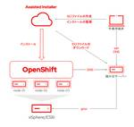
ゼロからはじめるOpenShift Virtualization（1）OpenShiftのインストール 3赤帽エンジニアブログ
Red Hatでソリューションアーキテクトをしている田中司恩(@tnk4on)です。 この連載はvSphere環境上にOpenShift Container Platform（以下、OpenShift）およびOpenShift Virtualizationの環境構築を解説するシリーズです。 可能な限り最小構成での検証環境の構築を目指し、1台のESXi上にOpenShiftをインストールしてネスト仮想環境でOpenShift Virtualizationを実行する方法を解説します。 また環境の構築後はvSphere上の仮想マシンを移行ツール（Migration Toolkit for Virtu…
5時間前

拡張機能で Chrome DevTools に独自パネルを追加してトラブルシュートに役立てよう 60Techtouch Developers Blog
テクニカルサポートを効率化する、Google Chrome 拡張機能で DevTools に独自パネルを追加して、トラブルシュートに有用な情報を表示させるツールの作り方を紹介します。
6日前

Remix x Cloudflare Workersで0->1 13STORES Product Blog
こんにちは、うしろのこです。直近1年ではVueから離れて、maja と呼ばれる組織管理基盤の新規プロダクトの開発をしていました。 プロダクトの話はこちら(maja)↓ note.st.inc 今回は、0->1における技術選定や開発中の工夫、結果どうだったかなどを書きます。 技術選定 初めに、前提条件は以下のような感じでした。 メンバーはReactの経験が豊富、フロントを触るのは多くて3,4人くらい 常にユーザー認証された状態で操作されるため、FE用のmiddleware的な層があるとうれしい toBアプリケーション せっかくなので使ったことのないものを使ってみよう、ということで、すでにWAFで…
4日前
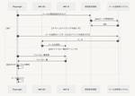
Playwrightでメール配信のテスト自動化にチャレンジ！ 46JX通信社エンジニアブログ
こんにちは、JX通信社でシニアエンジニアをしているSirosuzumeです。 JX通信社の「FASTALERT」には、ユーザーが事前に設定した地域で発生した災害情報を、メールで受信する機能があります。 しかしテストする手順も複雑で、配信条件も多様化していったこともあって、手動でのテストを行うことに限界を感じていました。 設定画面の挙動確認など、ブラウザ上で完結するテストであればPlaywrightを使って自動化することもできていたのですが、実際にメールを受信するところのテストを自動化する方法についてのノウハウ不足が課題でした。 そこで、Amazon SESの機能を改めて確認していたところ、特定…
7日前
楽楽精算のインフラチームを紹介します！ 27RAKUS Developers Blog | ラクス エンジニアブログ
チームの紹介 チームのミッション チーム体制と役割 チームの文化 取り組み事例 オブジェクトストレージのリプレイス 楽楽精算のインターネット通信で利用される帯域の増加対策 今後の展望
5日前
Gemini API の Function Calling 機能で LLM Agent を実装する 23Google Cloud Japanのフィード
LLM Agent 入門 データ処理パイプラインと LLM Agent の違いGoogle Cloud の Gemini API には Function Calling 機能が実装されており、基盤モデルの Gemini に「外部 API を利用して回答に必要な情報を収集する」という動作が追加できます。ここでポイントになるのは、「どの API をどのように使用すれば回答に必要な情報が得られるか？」という部分を Gemini 自身に考えさせるという点です。これを利用すると、いわゆる LLM Agent が実装できます。集めるべき情報の種類や処理の手順があらかじめ決まっている場合は...
4日前
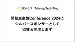
開発生産性Conference 2024にシルバースポンサーとして協賛＆登壇します 9Tabelog Tech Blog
おはようございます！ (開発生産性Conference 2024)の現地、虎ノ門ヒルズから品質管理室の荻野 (@kokotatata)がお届けします。 食べログは2024年6月28~29日に開催される開発生産性カンファレンスへと協賛し、ブース出展とスポンサーセッション枠での登壇をします。 ブースでは、Four keysについてのお悩みをみなさまとディスカッションをするためのボードを用意しています。 また、キーキャップ、ステッカー、靴下などのノベルティをご用意しておりますので、みなさまお気軽にお立ち寄りください。 明日(6月29日)の11:20-12:00にホール5-B会場では、品質管理室の菅原…
4日前
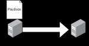
クラウド移行案件を担当してAnsibleを覚えた話 33Technology - NRIネットコムBlog
本記事は マイグレーションウィーク 3日目の記事です。 💻🖥 2日目 ▶▶ 本記事 ▶▶ 4日目 🖥💻 はじめに こんにちは。入社2年目の牛塚です。部署に配属されてからもうすぐ一年になりますが、さまざまな経験をし多くのことを学ぶことが出来ました。私は普段オンプレサーバーからクラウド環境へ移行する案件を担当しており、その中でAnsibleをはじめて使いました。今回はAnsibleについて簡単な説明と、実際に案件で使ってみて感じたことをまとめてみました。 Ansibleとは AnsibleとはサーバーをはじめとしたIT機器の構築作業を自動化できるIaCサービスです。サーバーのセットアップをする際に…
6日前
BigQueryとLookerStudioのニッチな落とし穴についてまとめてみた 27Timee Product Team Blog
こんにちは、タイミーでデータアナリストをしているyuzukaです。 主にプロダクトの分析に携わっています。 ビジネス職からデータアナリストに転向して約1年経った私が、1年前の自分に教えてあげたい、BigQueryや LookerStudioに関する落とし穴を、いくつか挙げてみようと思います。 はじめに 弊社では、分析環境として BigQueryを採用しています。LookerStudioを使って、 BigQueryのデータを参照してダッシュボードを作ることもよくあります。 BigQueryの SQLを使った分析を進めていく中で、想定と異なるデータが出てきてしまい、原因を特定するのに苦労し、無駄な…
5日前

ZOZOのSREが行くAWS Summit Japan 2024参加レポート 23ZOZO TECH BLOG
6/20〜6/21に開催されたAWS Summit Japan 2024の参加レポートをお届けします！
5日前

Software Design 2024年6月号 連載「レガシーシステム攻略のプロセス」第2回 ZOZOTOWNリプレイスにおけるIaCやCI/CD関連の取り組み 6ZOZO TECH BLOG
Software Design 2024年6月号 連載「レガシーシステム攻略のプロセス」第2回「ZOZOTOWNリプレイスにおけるIaCやCI/CD関連の取り組み」を記事として全文公開しました！ぜひご覧ください！
4日前
開発生産性カンファレンス2024の参加レポート 3noteエンジニアチーム 公式マガジン
6/28(金)、29(土)に虎ノ門ヒルズで行われた開発生産性カンファレンスというイベントに参加してきました。今年の開発生産性カンファレンスのテーマは、「開発生産性とビジネスインパクトをつなぐこと」です。続きをみる
3日前

Ruby で一番呼ばれたり定義されたりするメソッドはなんでしょう、調べてみました！ 13STORES Product Blog
テクノロジー部門で Ruby インタプリタ開発をしている笹田です。 Ruby ではメソッドを駆使してプログラミングをします。そんな Ruby を使っていると、一番使われているメソッド や 一番定義されているメソッド を知りたいと思ったことはありませんか？ 私はありませんでした。 が、ものは試しと調べてみました！ 調査は、あるタイミングの Ruby の RubyGems で取得できるすべての Gem （の各 Gem の最新版）を集めてきて、その中の .rb ファイルをすべて読み込み、字面上で呼び出されているメソッドと、定義されているメソッドを集計したものです。実際に動かしたときに呼ばれたり定義さ…
5日前
MySQL/Aurora/TiDBロック入門 – 第５回 WHERE 条件と違うロック読取り【解説動画付】 19技術ブログ – infiniteloop
第５回は REPEATABLE READ と READ COMMITTED の分離レベルの違いによって変わったり、WHERE 条件で感じる直感的な範囲とは一致しない範囲でかかるなど、MySQL のロック読取りの挙動につい…
5日前
プロジェクトマネージャーからプロダクトオーナーへの転身。スクラムの実践を通じて学んだ課題と魅力 5asoview! Tech Blog
はじめに ローンチまでのプロジェクト管理 開発プロセス プロジェクトの運用課題 開発スコープの肥大化 変更にかかるコストが大きい 実際には多くの不確実性を内包していた プロジェクトマネジメント 1 → 10フェーズへの移行とスクラムの導入 スクラム 実感した成果 課題感 メンバーの意識の高さに依存する チーム運用が軌道に乗るまである程度時間が必要 プロダクトマネジメント プロダクトオーナー プロダクトオーナーになる プロダクトオーナーとは プロダクトオーナーの魅力 プロダクトマネージャーとの違い プロジェクトマネージャーとの違い プロダクトオーナーの仕事 要求分析・要件定義 プロダクトバックロ…
4日前

STORES でのGitHub Copilot Enterprise活用方法 18STORES Product Blog
2024年4月18日に『GitHub Copilot Enterprise 使ってますか？ STORES での活用風景』を開催しました。イベントでお話した内容を文字起こし形式で紹介します。 hey.connpass.com Copilot Enterpriseを導入した経緯 hogelog：簡単に自己紹介させていただきます。hogelogです。技術基盤グループでエンジニアマネージャーをしています。よろしくお願いします。 waniji：佐々木と申します、ハンドルネームはwanijiです。開発A本部サービスGTMグループ所属、STORES 予約 のエンジニアをやっています、よろしくお願いします。 …
6日前

Matzさんを交えて、RubyKaigi 2024の社内共有会を実施しました！ 8メドピア開発者ブログ
こんにちは！メドピアの伏見(@fussy113)です！ メドピアでは、Rubyの父でありメドピアの技術アドバイザリーを務めていただいているMatzさん(@yukihiro_matz)をお招きして、オンライン会議を開催しています。 そのオンライン会議にて、5月に開催されたRubyKaigi 2024に参加したエンジニアからの共有会を実施しました。 この記事ではその共有会のレポートをお届けします！ RubyKaigi 2024 と メドピアのスポンサーの運用 RubyKaigiのプロポーザルを通したい。 ruby.wasm 最前線 2024 - wasmでMockServerをつくる Improv…
4日前
【AWSイベント参加 】AWS Summit Japan 2024に参加してきました！ 8APC 技術ブログ
目次 目次 はじめに イベントの概要 会場の雰囲気 聞いたセッション 安全とスピードを両立するために ~ DevSecOps とプラットフォームエンジニアリング~ 生成 AI でセキュリティ強化！×生成 AI の脅威分析 おわりに お知らせ はじめに こんにちは、クラウド事業部の菅家さつきです。 2024年6月21,22日にAWS Summit Japanに参加してきましたので、会場の様子や聞いたセッションなどの紹介をできればと思います。 イベントの概要 イベント名：AWS Summit Japan 開催日：2024年6月20日,21日 イベントの概要： 公式ページより引用します。 AWS S…
4日前

Rails: Kamalデプロイツールはゲームチェンジャーになるか？（翻訳） 3TechRacho
概要 元サイトの許諾を得て翻訳・公開いたします。 英語記事: Kamal: hot deployment tool to watch—or a total game changer?—Martian Chronicles, Evil Martians’ team blog 原文初版公開日: 2023/04/25 原文更新日: 2024/04/02 原著者: Kirill Kuznetsov（SRE筆頭）、Travis Turner（技術編集者） サイト: Evil Martians -- ニューヨークやロシアを中心に拠点を構えるRuby on Rails開発会社です。良質のブログ記事を多数公開し、多くのgemのス […]The post Rails: Kamalデプロイツールはゲームチェンジャーになるか？（翻訳） first appeared on TechRacho.
4日前

【イベントレポート】「ZOZO物流システムリプレイスの旅〜序章〜これまでとこれから」を開催しました！ 3ZOZO TECH BLOG
6月25日に開催したイベントのレポートを公開しました！当日いただいた質問への回答も掲載していますので、ぜひご覧ください！
4日前
Go Conference 2024にスポンサーしました & 一休はGoを活用しています 11一休.com Developers Blog
Go Conference 2024にスポンサーしました CTO室プラットフォーム開発チームの山口(@igayamaguchi)です。 先日6/8(土)に一休でGo Conference 2024にスポンサーをさせていただき、スポンサーブースを出展しました。 gocon.jp 来ていただいた方はありがとうございます！ 来ていただいた方と話していく中で、一休がGoを使っていることを知らない方がたくさんいることに気づきました。逆に、最近使い始めたばかりのRustの事例についてご存知の方のほうが多かったのです。これは、次のRustについての記事が多くの方に読まれたことによる影響だと思います。 use…
7日前

ZOZOTOWNの企画LPをアーカイブする！ 6ZOZO TECH BLOG
目次 目次 はじめに 企画LPの儚さ 企画LPをアーカイブする！ 仕様 開発について 技術選定 ちょっと技術の話 スクラム開発 ユーザーの反応 おわりに はじめに こんにちは！ ZOZOTOWN企画開発部・企画フロントエンド1ブロックの秋山です。ZOZOTOWNトップでは、セール訴求や新作アイテム訴求、未出店ブランドの期間限定ポップアップ、著名人コラボなどの企画イベントが毎日何かしら打ち出されています。私はそのプラットフォームとなる企画LPをメインに実装するチームに在籍しています。 チーム特性としては以下のようなものがあります！ クリエイティブコーディング寄りの実装をする機会に恵まれやすい 普…
4日前
dbt 1.8のUnit Tests 実施とその知見（時間ロックとSQLの分割について） 8Timee Product Team Blog
株式会社タイミーのkatsumiです！ dbtのバージョン1.8以上を利用することで、unit testsが利用可能になります。今までもSingular テスト（単一テスト）やGeneric テスト（汎用テスト）は可能でしたが、テストデータを利用した単体テストも行うことができます。 導入準備 dbt-coreの場合 dbt v1.8 以上を利用してください。 dbt-cloudの場合 2024/06/12時点では dbt「Keep on latest version」を選択することで利用できます。 弊社ではunit-test用の環境のみlatest versionを利用しています。 Unit …
7日前
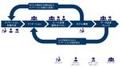
MLの裏側を支えるアノテーション組織運営の実践禄 5CADDi Tech Blog
はじめまして！ 機械学習チームでプロダクトマネジメントを担当している、井上といいます。 今回はCADDiにおけるアノテーションの組織づくりについて紹介します。 アノテーションについて調べると、データ生成や品質改善のノウハウはよく目にするものの、アノテーションを行う組織体制づくりに関する情報は中々見つかりません。弊社のアノテーション組織づくりがその一事例として、参考材料になればいいなと思います。 「紹介します」なんて言うとさもよくできた事例のように聞こえそうですが、実際は試行錯誤の日々です.....💦 アノテーションってなんなの？ アノテーションの組織づくりが必要になる背景 CADDiのアノテー…
5日前
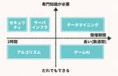
社会人からはじめる競技プログラミング 4フューチャー技術ブログ
<p>本記事は<a href="/articles/20240617a/">「珠玉のアドベントカレンダー記事をリバイバル公開します」</a>企画のために、以前Qiitaに投稿した記事を一部ブラッシュアップしたものになります。</p><h2 id="はじめに"><a
7日前
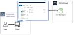
S3をエクスプローラのように使ってみる～フリーツール編～ 3APC 技術ブログ
目次 目次 はじめに ゴール 検証プラン やってみる 1. odrive syncのユーザ登録とS3バケットを設定 2. Windowsクライアントへodrive syncをインストール まとめ おわりに はじめに こんにちは、株式会社エーピーコミュニケーションズ クラウド事業部の松尾です。 本記事ではAmazon S3をブラウザ経由ではなくエクスプローラーとして使えるようにしていきます。使うツールはいくつかありますが、今回は無償であることから「odrive sync」を採用してみます。 AWS公式としてはStorage Gatewayがありますが、仮想マシンやハードウェアアプライアンスが必要…
5日前
Firecrawlをローカルで動かしDifyと繋げてみる 3株式会社ZOZOのフィード
概要Dify v0.6.11で利用可能になったFirecrawlでWebサイトのナレッジ登録が可能にSaaS版のFirecrawlは無料だと500回のリクエスト制限があるhttps://www.firecrawl.dev/OSS版のFirecrawlは無制限でリクエストが可能この記事ではローカルでOSS版のFirecrawlを立ち上げDifyと繋げる方法を紹介 前提DockerやGitコマンドが使えるローカル上にDifyが既に起動している OSS版Firecrawlをローカル起動 クローンOSS版Firecrawlは下記で活発に開発が行われてい...
5日前